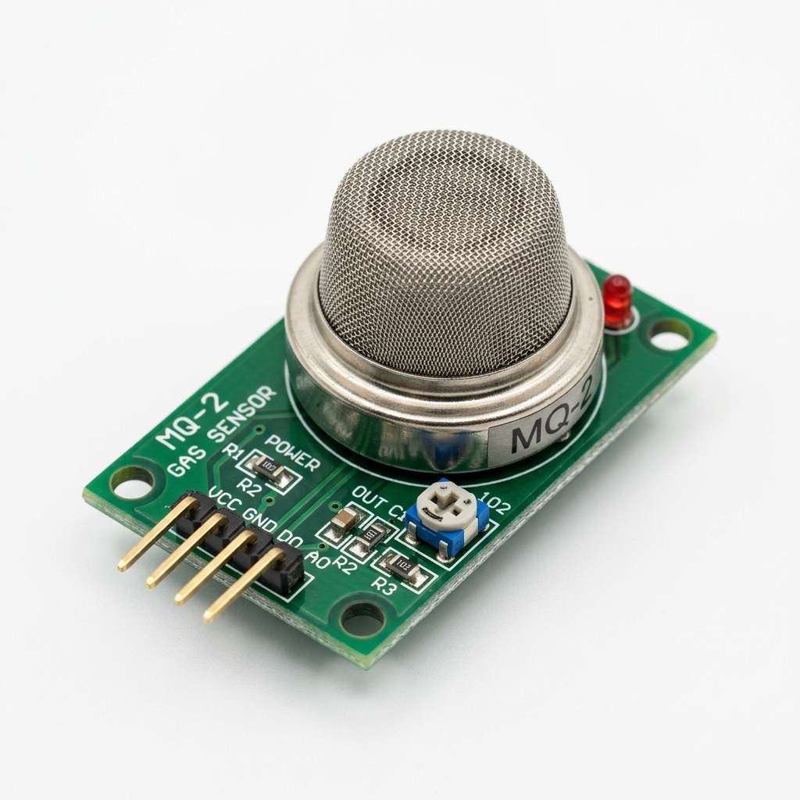

MQ-2
Categoria: Gás e Qualidade do Ar
Conceito
O MQ-2 é um sensor semicondutor de gás, sensível a gases inflamáveis e fumaça. Muito utilizado em detectores de vazamento de gás residenciais e industriais.
Princípio de Funcionamento
Ele possui um elemento aquecedor interno e uma fina camada de Dióxido de Estanho (SnO2). Em ar limpo, o SnO2 possui baixa condutividade. Na presença de gases combustíveis, a condutividade aumenta de acordo com a concentração do gás. Um circuito simples converte essa mudança de condutividade em um sinal de tensão correspondente.
Principais Especificações Técnicas
- Tensão de operação: 5V DC
- Gases detectados: GLP, Propano, Metano, Hidrogênio, Álcool, Fumaça.
- Faixa de detecção: 300 a 10.000 ppm (partes por milhão)
- Necessidade de pré-aquecimento: Sim (o aquecedor interno consome cerca de 800mW)
Aplicações Industriais ou IoT
Detecção de vazamento em tubulações de gás, monitoramento de ambientes classificados na indústria petroquímica, prevenção de incêndios florestais e monitoramento da qualidade do ar em minas.
Exemplo em um Projeto
Detector de Vazamento de GLP: Instalado próximo às tubulações em uma cozinha industrial. O sensor lê continuamente a concentração. Se atingir um nível perigoso, o microcontrolador fecha automaticamente a válvula solenoide central de gás e ativa um exaustor, evitando explosões.